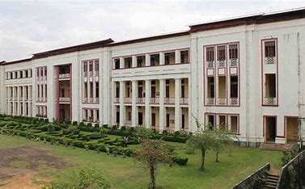
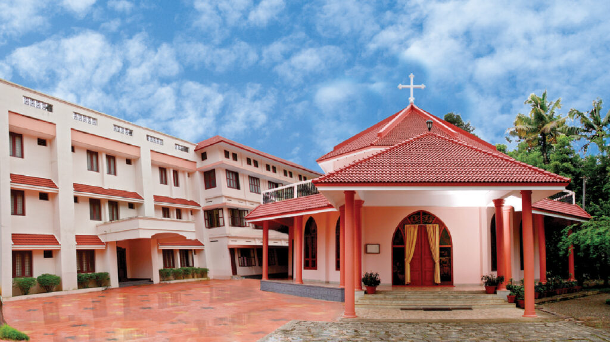
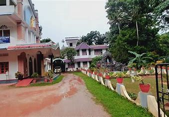

Pater Dr. Joseph Puthoor CST
Projekt Koordinator
für Europa der St. Joseph Provinz Deutschland der Kongregation der hl. Theresa von Kinde Jesu
(Little Flower Congregation,CST-Patres)
Sehr geehrte Leserinnen und Leser,
die Little Flower Congregation ist eine Priester-Kongregation, die im März 1931 in Mookkannur, Indien, von Pfr. Thomas Panat (1831-1897), später bekannt unter seinem Ordensnamen Pater Basilius CST, gegründet wurde. Die Leitlinie des Ordens ist der ,kleine Weg" der Schutzpatronin, der Heiligen Theresia von Lisieux. Nach dem Beispiel der Ordenspatronin sind alle Mitglieder der Gemeinschaft zu ununterbrochener Erfahrung der Liebe Gottes und zu selbstloser Hingabe aus reinem Vertrauen in Gott aufgerufen.
Pater Dr. theol. Joseph Puthoor CST, der Projekt Koordinator für Europa, ist ein katholischer Priester der St. Joseph Provinz Deutschland der Kongregation der hl. Theresa von Kinde Jesu (Little Flower Congregation, CST-Patres). Am 17. Mai 1996 legte er seine erste Profess ab und wurde Mitglied der Kongregation, und ebenso im Jahr 2002 seine ewige Profess. Er wurde am 03. Januar 2005 zum Priester geweiht.
Nach seiner Priesterweihe wurde er zum Leiter eines Bauwerkes, John Paul II Memorial College, Little Flower Ashram, Labbakkada, Kerala, in einem abgelegenen Dorf eingesetzt, wo viele arme und unprivilegierte Kinder der High Ranges des Bezirks Idukki, Kerala leben. Dieses Gebiet sollte als Chance für die soziale Aufwertung dienen, um den benachteiligten Schülern die Möglichkeit zur Ausbildung einer ganzheitlichen und wesentlichen Entwicklung anzubieten. Sie lernen ihr eigenes Leben zu gestalten und ihre Familie zu unterstützen, um auch ein menschenwürdiges Leben führen zu können.
Später wurde er in die Diözese Münster in Deutschland zum pastoralen Dienst eingesetzt. Nach dem fünfjährigen Pastoraldienst in Deutschland wurde er zum Lizentiat und zur Forschung in Theologie an das Päpstliche Theologische Institut Papst Johannes Paul II. für Ehe- und Familienwissenschaften an der Päpstlichen Lateranuniversität Città del Vaticano freigestellt und hat an derselben Universität im Familienpastoral zum Doktor der Theologie promoviert. Er schloss sein Studium 2020 ab. Nach seiner Promotion wurde er als Pastor an der St. Viktor Basilika Xanten in Deutschland eingesetzt. Derzeit ist er Pastor in der Pfarrgemeinde St. Dionysius Walsum im Bistum Münster.
Überall, wo wir als Little Flower Missionare tätig sind, geht es uns nicht nur um die Vermittlung des Christlichen Glaubens. Immer möchten wir auch die Lebensumstände der Menschen verbessern. Das ist unsere Herzensangelegenheit.
Biodata
Name:Joseph Puthoor
Home Address:St Joseph's Provicial House C.S.T. Fathers,Eruthamala P.O,Aluva, 683112, Kerala, India
Work Address:Friedrich Str.24, 47179 Duisburg, Deutschland
Parish:St Thomas Cathedral, Pala
Dioces:Pala
Date of Birth:05.09.1974
Date of Baptism:15.09.1974
Date of Confirmation:02.12.1984
Date of Priestly Ordination:03.01.2005
Education

St Thomas College
Pala
1990-1992

St Thomas HS
Pala
1987-1990

St Thomas BTS
Pala
1984-1987
Ecclesiastical Studies

Lateran University,Vatican
Rome
Doctrate in Sacred Theology
2015-2020
Lateran University, Vatican
Rome
Licentiate in Sacred Theology
2012-2015

Vijnananilayam, Eluru, Andra Pradesh
Bachelor in Sacred Theology
2001-2004

Mar Mathew's Boys Town
Pastoral Experience
Kozhippilly, Kerala, India
2000-2001

Little Flower Major Seminary
Bachelor in Philosophy
Aluva, Kerala, India
1996-1998

Vidhyabhavan
Banglore, India
Novitiate
1995-1996

Little Flower Minor Seminary
Poovathode, Kerala, India
1994-1995
Appointments
![Appointment 1]()
St Dionysius Pfarrgemeinde Walsum, Germany
Pastor
01.03.2024- Ongoing

St Viktor Probsteigemeinde Xanten, Germany
Pastor
01.10.2020
Rome, Italy
Higher Studies
01.09.2012- 03.06.2020
St Marien Luenen, Germany
Vicarius - cooperatur
18.05.2007- 31.08.2012

Little Flower Ashram, Labbakkada
Assist Vocation Promoter
06.07.2006- 17.05.2007
Little Flower Ashram J.P.M College, Labbakkada
Procurator/ Bursar
20.03.2006- 17.05.2017
Little Flower Ashram, Labbakkada
In charge of Construction Work
01.06.2005- 19.03.2006

St Francis Assisi, Amballoor
Arch Dioces of Eranakulam
Assist. Vicar
31.01.2005- 31.05.2005